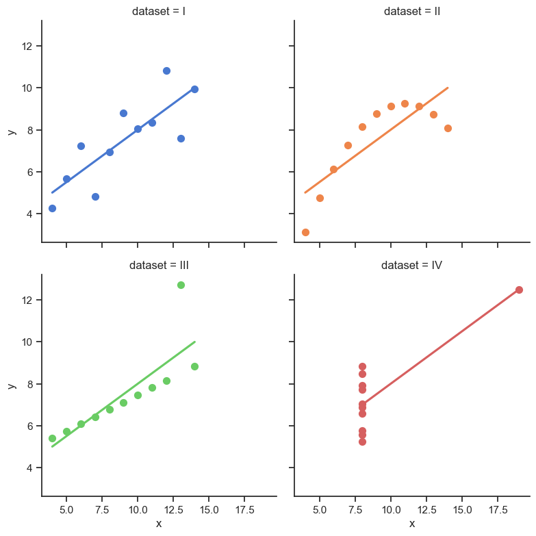
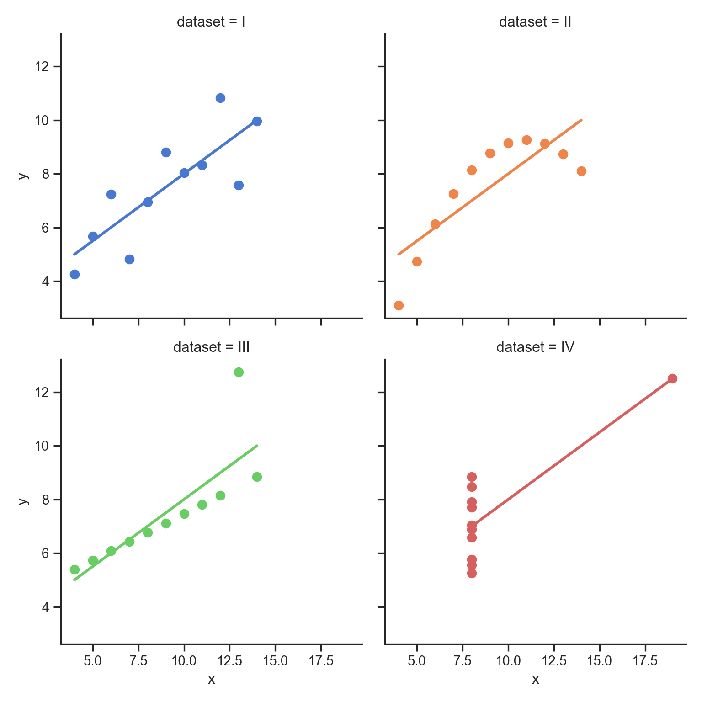

install.packages("reticulate")2 First steps
Python and R are both popular programming languages used for data analysis and machine learning tasks. While both languages have their own strengths and weaknesses, there are situations where using both languages together can be beneficial.
using Python and R together can be beneficial when you want to take advantage of the strengths of both languages. Whether you want to use R libraries in Python, Python libraries in R, or combine both languages in a single application, there are many options available for integrating Python and R. Here are some ways in which Python can be used with R:
R can be called from Python using the “rpy2” package: rpy2 is a Python package that allows Python programs to call R functions and use R data structures. This can be useful when you want to use an R library that is not available in Python or when you have existing R code that you want to integrate into your Python program.
Jupyter Notebooks can be used to combine Python and R code: Jupyter Notebooks are interactive documents that allow you to combine code, text, and visualizations in a single document. Jupyter Notebooks support both Python and R, so you can use both languages in the same notebook.
Shiny applications can be built using Python: Shiny is a popular web framework for building interactive web applications in R. However, Shiny also supports using Python through the “reticulate” package. This can be useful when you want to use a Python library that is not available in R or when you have existing Python code that you want to integrate into your Shiny application.
Finally, Python can be called from R using the
reticulatepackage: Reticulate is a package that allows R programs to call Python functions and use Python data structures. This can be useful when you want to use a Python library that is not available in R or when you have existing Python code that you want to integrate into your R program (Ushey, Allaire, and Tang 2023).
The reticulate package makes it easy for R users to incorporate Python functionality into their R workflows, whether it’s using Python libraries not available in R, reusing existing Python code, or simply taking advantage of Python’s strengths in specific areas such as machine learning or web development.
Python environment management: The package provides tools to manage Python environments within R, including creating and configuring virtual environments and managing package dependencies.
Calling Python code: The package provides functions to call Python code from R, including importing Python modules, calling Python functions, and accessing Python objects. Passing data between R and Python: The package allows for seamless integration between R and Python data structures. For example, R data frames can be converted to Python pandas data frames and vice versa.
Interactive sessions: The package provides an interactive Python console within R sessions, allowing users to execute Python commands interactively.
Plotting: The package allows R users to create Python plots using popular Python visualization libraries such as Matplotlib and Seaborn.
First, you need to have Python installed on your system. You can download Python from the official website (https://www.python.org/downloads/) and install it following the instructions provided. Next, install the reticulate package: Open an R session and install the reticulate package by running the following command:
Once the package is installed, you need to set the Python path in R. The Python path is the location of the Python executable on your system. You can set the path by running the following command:
library(reticulate)
use_python("/Users/edgar/Library/r-miniconda-arm64/envs/r-reticulate/bin/python")If you’re using the default Python installation on your system, you can skip this step. You can test the installation by running the following command:
py_config()python: /Users/edgar/Library/r-miniconda-arm64/envs/r-reticulate/bin/python
libpython: /Users/edgar/Library/r-miniconda-arm64/envs/r-reticulate/lib/libpython3.8.dylib
pythonhome: /Users/edgar/Library/r-miniconda-arm64/envs/r-reticulate:/Users/edgar/Library/r-miniconda-arm64/envs/r-reticulate
version: 3.8.16 | packaged by conda-forge | (default, Feb 1 2023, 16:01:13) [Clang 14.0.6 ]
numpy: /Users/edgar/Library/r-miniconda-arm64/envs/r-reticulate/lib/python3.8/site-packages/numpy
numpy_version: 1.24.2
NOTE: Python version was forced by use_python() functionThis command should display information about your Python installation, including the Python version, the location of the Python executable, and the Python library path. Once the reticulate package is installed and configured, you can start using Python functionality in your R code. For example, you can import Python modules, call Python functions, and access Python objects directly from R.
However, I’ll use a virtual environment for the book and the conda_list() functions returns all (conda) environment of the system.
#List all conda installations
conda_list() name
1 base
2 EdgarGPT
3 IliartBot
4 IliartGPT.venv
5 flask
6 fuckit
7 r-reticulate
8 streamlit.venv
python
1 /Users/edgar/Library/r-miniconda-arm64/bin/python
2 /Users/edgar/Library/r-miniconda-arm64/envs/EdgarGPT/bin/python
3 /Users/edgar/Library/r-miniconda-arm64/envs/IliartBot/bin/python
4 /Users/edgar/Library/r-miniconda-arm64/envs/IliartGPT.venv/bin/python
5 /Users/edgar/Library/r-miniconda-arm64/envs/flask/bin/python
6 /Users/edgar/Library/r-miniconda-arm64/envs/fuckit/bin/python
7 /Users/edgar/Library/r-miniconda-arm64/envs/r-reticulate/bin/python
8 /Users/edgar/Library/r-miniconda-arm64/envs/streamlit.venv/bin/pythonVirtual environments in Python are a useful tool for managing dependencies and ensuring that your project runs smoothly on different systems. Here are several reasons why it is wise to use virtual environments in Python:
Isolation: When you create a virtual environment, you create a self-contained Python environment with its own installation of Python and any required packages. This means that the packages installed in one virtual environment do not interfere with packages installed in other virtual environments or the global Python environment. Isolating packages in this way reduces the risk of package version conflicts and makes it easier to manage dependencies.
Reproducibility: By using virtual environments, you can ensure that your code runs in a consistent and reproducible environment, regardless of the system it is run on. This is especially important if you plan to share your code with others or if you need to run your code on multiple systems.
Flexibility: Virtual environments make it easy to switch between different Python versions or package configurations. This can be useful if you need to work on multiple projects that require different versions of Python or different package dependencies.
Security: When you install packages in a virtual environment, you are not affecting the global Python installation on your system. This means that any security vulnerabilities or issues with the packages you install are contained within the virtual environment, reducing the risk of affecting other parts of your system.
Create a Python environment using the virtualenv_create() function. This function creates a new virtual environment and installs the specified packages. For example, to create a virtual environment called “myenv” and install the pandas package, you can run the following command:
virtualenv_create("myenv", packages = "pandas")Finally, you can install additional Python packages using the py_install() function. This function installs the specified packages in the active Python environment. For example, to install the pandas package, you can run the following command:
py_install("pandas")The next console achieves the same result with Conda and import the Pandas module.
#install packages
conda_install("r-reticulate", "pandas")
pandas <- import("pandas")Let us explore some Python packages to see how we can intregrate them in R. For example, Seaborn is a visualization library based on Matplotlib. It provides a high-level interface for creating informative and attractive statistical graphics. It even gives us access to know data sets such as mtcars or Anscombe’s quartet.
Anscombe’s quartet is a set of four datasets that have nearly identical descriptive statistics, yet have very different plots when graphed. The quartet was created by the statistician Francis Anscombe in 1973 to demonstrate the importance of visualizing data and the limitations of summary statistics. Each dataset consists of 11 (x, y) pairs, and the four datasets are designed to have the same mean, variance, correlation, and linear regression line. However, when plotted, each dataset reveals a very different relationship between x and y. The quartet is often used to illustrate the importance of data visualization and exploratory data analysis in understanding and interpreting statistical results.
import seaborn as sns
sns.set_theme(style="ticks")
# Load the example dataset for Anscombe's quartet
df = sns.load_dataset("anscombe")
# Show the results of a linear regression within each dataset
sns.lmplot(
data=df, x="x", y="y", col="dataset", hue="dataset",
col_wrap=2, palette="muted", ci=None,
height=4, scatter_kws={"s": 50, "alpha": 1}
)

Let us load the “mpg” dataset and display the first few rows of the data. If you haven’t already, you’ll need to install Seaborn first (Waskom 2021).
Load Seaborn and the “mpg” dataset: Once you have Seaborn installed, you can load it and the “mpg” dataset using the following Python code. It imports the Seaborn package as “sns” and loads the “mpg” dataset into a variable called “cars”. Moreover, I also import the Pandas package which we will use as well.
#import numpy as np
#import pandas as pd
import seaborn as sns
import pandas as pd
cars = sns.load_dataset("mpg")To display the first few rows of the “mpg” dataset, you can use the head() function from the Pandas library, which is included in the Seaborn package:
#print(cars)
cars.head() mpg cylinders displacement ... model_year origin name
0 18.0 8 307.0 ... 70 usa chevrolet chevelle malibu
1 15.0 8 350.0 ... 70 usa buick skylark 320
2 18.0 8 318.0 ... 70 usa plymouth satellite
3 16.0 8 304.0 ... 70 usa amc rebel sst
4 17.0 8 302.0 ... 70 usa ford torino
[5 rows x 9 columns]The Pandas library is a popular data analysis toolkit for Python. It provides a wide range of functions and tools for working with structured data. For example, the describe() function is used to generate descriptive statistics of a Pandas DataFrame or Series. When called on a DataFrame or Series, the describe() function provides summary statistics such as count, mean, standard deviation, minimum, maximum, and quartiles. The next console shows how to generate descriptive statistics for the “mpg” dataset using the describe() function, you can use the following Python code:
cars.describe() mpg cylinders ... acceleration model_year
count 398.000000 398.000000 ... 398.000000 398.000000
mean 23.514573 5.454774 ... 15.568090 76.010050
std 7.815984 1.701004 ... 2.757689 3.697627
min 9.000000 3.000000 ... 8.000000 70.000000
25% 17.500000 4.000000 ... 13.825000 73.000000
50% 23.000000 4.000000 ... 15.500000 76.000000
75% 29.000000 8.000000 ... 17.175000 79.000000
max 46.600000 8.000000 ... 24.800000 82.000000
[8 rows x 7 columns]Or consider the mean() function which is used to calculate the arithmetic mean of a Pandas DataFrame or Series. When called on a DataFrame or Series, the mean() function calculates the average value of all the elements in the DataFrame or Series.
cars.mean()mpg 23.514573
cylinders 5.454774
displacement 193.425879
horsepower 104.469388
weight 2970.424623
acceleration 15.568090
model_year 76.010050
dtype: float64
<string>:1: FutureWarning: The default value of numeric_only in DataFrame.mean is deprecated. In a future version, it will default to False. In addition, specifying 'numeric_only=None' is deprecated. Select only valid columns or specify the value of numeric_only to silence this warning.Scipy is a popular library for scientific computing in Python, and it provides functions for calculating statistical values, such as the correlation coefficient. Start by importing the necessary packages. You’ll need the scipy.stats module to calculate the correlation coefficient, and you may also need numpy to work with arrays or matrices of data.
import scipy
import scipy.stats as stats
import numpy as npThe scipy.stats module can calculate the correlation coefficient for two arrays, but if you have more than two variables, you’ll need to use a matrix. Use the stats.pearsonr() function to calculate the Pearson correlation coefficient. This function takes two arguments: the two arrays or matrices to compare, and it returns two values: the correlation coefficient and the p-value.
mpg = cars["mpg"]
horsepower = cars["horsepower"]
scipy.stats.pearsonr(mpg, horsepower)array must not contain infs or NaNsUnfortuntely, there is a missing values problem that we need to fix first. In Python, missing values are typically represented by the special value NaN (Not a Number), which is part of the numpy library. There are different ways to drop missing values from a dataset, depending on the context and the desired outcome.
Drop rows or columns with missing values: If you have missing values in your dataset and you want to remove entire rows or columns that contain at least one missing value, you can use the dropna() method. This method removes all rows that contain at least one missing value by default, but you can specify the argument axis=1 to remove columns instead.
If you want to drop missing values only within a specific column, you can use the dropna() method with the subset argument. This argument specifies the column or columns to consider when dropping missing values. The next console shows the first approaches and the results of the correlation coeficient.
cars = cars.dropna()
mpg = cars["mpg"]
horsepower = cars["horsepower"]
scipy.stats.pearsonr(mpg, horsepower)PearsonRResult(statistic=-0.7784267838977761, pvalue=7.031989029403436e-81)Alternatively, if you have a pandas DataFrame, you can use the pandas.DataFrame.corr() method to calculate the correlation coefficient for all pairs of columns.
corr_matrix = cars.corr(method='pearson')<string>:1: FutureWarning: The default value of numeric_only in DataFrame.corr is deprecated. In a future version, it will default to False. Select only valid columns or specify the value of numeric_only to silence this warning.print(corr_matrix) mpg cylinders ... acceleration model_year
mpg 1.000000 -0.777618 ... 0.423329 0.580541
cylinders -0.777618 1.000000 ... -0.504683 -0.345647
displacement -0.805127 0.950823 ... -0.543800 -0.369855
horsepower -0.778427 0.842983 ... -0.689196 -0.416361
weight -0.832244 0.897527 ... -0.416839 -0.309120
acceleration 0.423329 -0.504683 ... 1.000000 0.290316
model_year 0.580541 -0.345647 ... 0.290316 1.000000
[7 rows x 7 columns]In the next two chapter we learn more about data preparation, analysis, and visualization with Python. For example, the statsmodels.formula.api module is used to create and fit a linear regression model. The formula for the regression model is defined using a string that specifies the dependent variable and the independent variables, separated by ~ operator which is very similar compared to R. The ols() method is used to create the model, passing in the formula and the dataset. Finally, the fit() method is used to fit the model to the data, and the summary() method is used to print a summary of the model results.
import statsmodels.api as sm
import statsmodels.formula.api as smf
results = smf.ols('mpg ~ horsepower', data=cars).fit()
print(results.summary()) OLS Regression Results
==============================================================================
Dep. Variable: mpg R-squared: 0.606
Model: OLS Adj. R-squared: 0.605
Method: Least Squares F-statistic: 599.7
Date: Sat, 01 Jun 2024 Prob (F-statistic): 7.03e-81
Time: 21:01:17 Log-Likelihood: -1178.7
No. Observations: 392 AIC: 2361.
Df Residuals: 390 BIC: 2369.
Df Model: 1
Covariance Type: nonrobust
==============================================================================
coef std err t P>|t| [0.025 0.975]
------------------------------------------------------------------------------
Intercept 39.9359 0.717 55.660 0.000 38.525 41.347
horsepower -0.1578 0.006 -24.489 0.000 -0.171 -0.145
==============================================================================
Omnibus: 16.432 Durbin-Watson: 0.920
Prob(Omnibus): 0.000 Jarque-Bera (JB): 17.305
Skew: 0.492 Prob(JB): 0.000175
Kurtosis: 3.299 Cond. No. 322.
==============================================================================
Notes:
[1] Standard Errors assume that the covariance matrix of the errors is correctly specified.